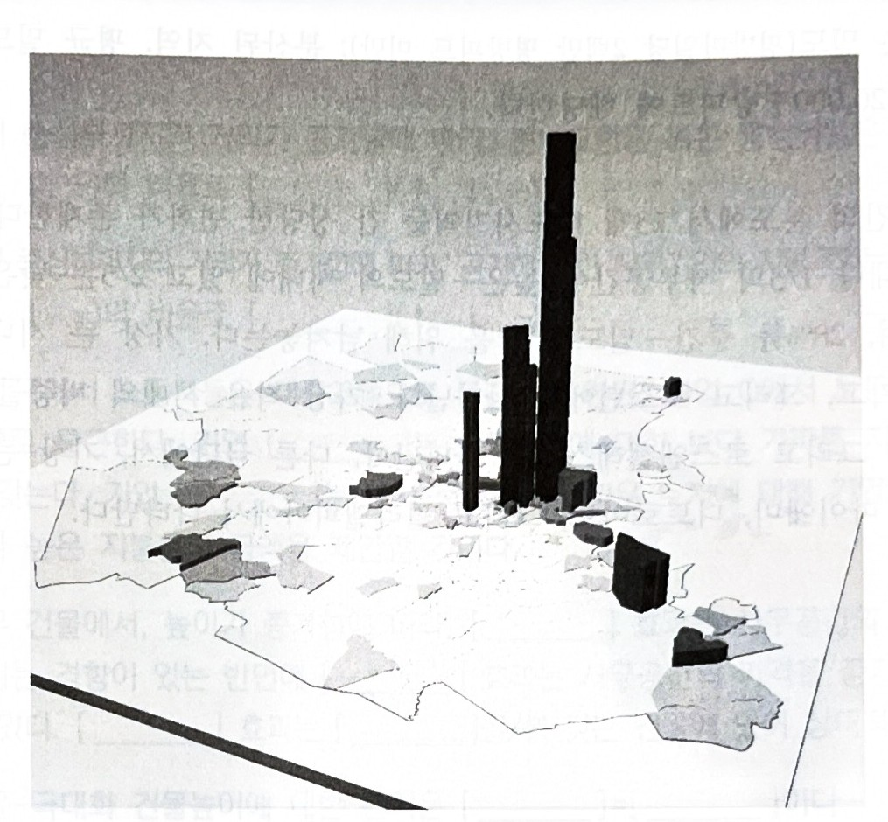
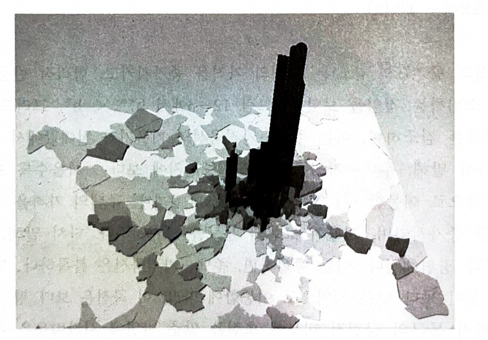
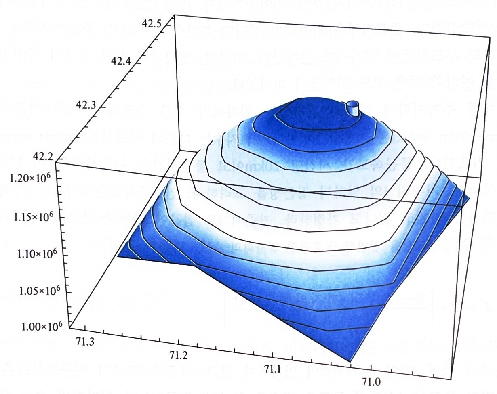
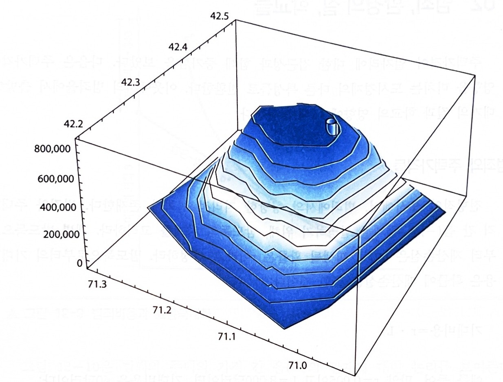
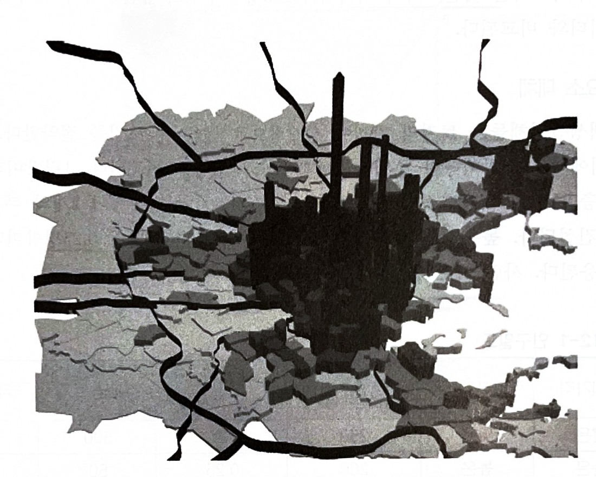

6주차. 도시토지이용과 분포
지난 시간 — 도시노동시장
노동시장의 두 곡선
도시노동공급곡선은 우상향함 — 임금이 오르면 다른 도시에서 노동자가 들어옴
도시노동수요곡선은 우하향함 — 수출기업의 고용이 임금에 반응함
고용승수
수출부문 일자리 하나가 지역서비스 일자리를 더 불러 총 고용이 처음보다 크게 늘어남
승수는 큰 도시에서 더 큼
비교정학
노동수요가 늘면 임금과 고용이 함께 오르지만, 새 일자리의 상당 부분은 이주해 온 사람에게 감
노동공급이 늘면 고용은 늘고 임금은 내림
공공정책
세금 유인책·스포츠 경기장·초대형 이벤트의 고용효과는 대체로 기대보다 작음
→ 지난 시간까지는 노동자와 기업이 얼마나 모이는지를 봤음.
오늘은 그들이 어디에 자리 잡는지, 즉 토지시장으로 옮겨 감
10장 농업·제조업 토지 · 11장 사무공간과 건물높이 ·
12장 주택과 주거용 토지
“토지에 있어서의 고민거리는 그들이 더 이상 이것을 만들지 않는다는 것이다.” — 윌 로저스
고정된 공급의 토지에 대한 경쟁은 토지가 잔여재산분배청구권자임을 의미함
토지 임대료는 기업의 총 수입에서 생산의 비토지 비용을 뺀 것과 동일함
지주는 기업이 다른 생산요소들에 대해 모두 지불한 이후에 남은 것을 얻음
농업용 토지의 가격은 비옥도를, 제조업용 토지의 가격은 접근성을 반영함
01 비옥도와 잉여의 원칙
농업용 토지의 가격은 무엇이 정하는가 · 교재 p.195~200
잉여의 원칙 (the leftover principle)
데이비드 리카르도(1821)는 농업용 토지의 가격이 이의 비옥도에 의해 결정된다는 아이디어에 기여하였음
토지 비옥도의 증가는 생산비용을 감소시키며, 따라서 농부는 이 토지에서 작물을 재배하기 위해 보다 많이 지불할 용의를 지님
비옥한 토지에 대한 농부들 간 경쟁적인 입찰은 승리하는 입찰자가 영(0)의 경제적 이윤을 갖는 수준으로 토지의 가격을 상승시킴
→ 승리하는 입찰자에 의해 지불되는 임대료는 총 수입에서 비토지 비용을 뺀 것과 동일함
→ 지주는 농부가 다른 생산요소들에 대해 지불한 후에 남는 돈을 얻음
토지 임대료, 시장가치, 그리고 토지의 가격
토지 임대료 land rent
대지를 이용할 권리에 대한 연간 지불액
농부는 옥수수 재배를 위한 1헥타르의 토지를 이용하기 위해 지주에게 연간 300달러를 지불할 수 있음
시장가치 market value
토지 소유를 위한 구입가격
옥수수 재배에 적합한 토지의 시장가치는 1헥타르당 6,000달러가 될 수 있음
토지는 소득의 흐름을 낳는 자산이며, 투자자가 지불하고자 하는 최대치는 소득 흐름의 현재가치와 동일함
시장 이자율 i = 5%라면
$PV = R/i = \$300 / 0.05 = \$6{,}000$
이 현재가치는 은행 계좌에 예치하는 것 대신에 토지에 투자하는 것의 기회비용을 반영한 것
→ 이 책에서 토지의 가격은 토지 임대료와 동의어
→ 연간 임대료를 이자율로 나누면 시장가치가, 시장가치에 이자율을 곱하면 암묵적 가격(연간 임대료)이 됨
농업용 토지 임대료 모형의 다섯 가정
임차 농부들이 다양한 비옥도의 토지에 옥수수를 재배하는 지역을 고려하라
- 생산물 시장에서의 완전한 경쟁 — 농부들은 가격수용자들이고, 경제적 이윤은 장기적으로 영(0)
- 공통의 생산요소 가격들 — 비토지 생산요소들(재료·노동·자본)의 가격은 지역 전체에 걸쳐 동일함
- 가장 높은 입찰자에게 토지를 임대 — 지주는 가장 높은 입찰자에게 토지를 임대함
- 영(0)의 운송비용 — 운송비용은 영(0)
- 국가수준에서의 가격들 — 모든 가격들은 국가 시장에서 결정되고 지역에서의 사건들에 영향을 받지 않음
비옥도가 지불용의를 정한다
한계비용곡선은 평균 총 비용곡선을 최저점에서 관통함
비용곡선은 재료·자본·노동·농부의 기회비용을 포함한 모든 비토지 비용을 담음
농부는 가격 = 한계비용인 생산량에서 이윤을 극대화하고, 음영 사각형이 이윤 사각형
경쟁이 지불용의를 임대료로 바꾼다
잉여의 원칙: 균형 토지 임대료는 총 수입에서 비토지 비용을 뺀 것과 동일함
경쟁이 강요함
개별 농부는 높은−비옥도 토지에 대해 500달러까지 지불할 용의가 있고 경쟁에 의해 그렇게 하도록 강요됨
500달러보다 적은 임대료에서 지주는 조금 더 지불할 용의가 있는 또 다른 농부를 찾을 수 있음
→ 균형 임대료가 경제적 이윤을 영(0)으로 만들기 때문에 농부들은 상이한 농지들 간에 무차별함
→ 높은−비옥도 토지의 생산비용 절약은 보다 높은 토지비용에 의해 정확히 상쇄됨
시장진입에 제약이 있으면 적용되지 않음
진(Gene)이 생산비용을 200달러만큼 줄이는 농업기술에 특허를 가지고 있다고 하자
지주는 700달러를 받을 것으로 예상할 수 없는데 그 금액을 지불하고자 하는 경쟁하는 농부들이 없기 때문
진은 단지 500달러를 지불하고 200달러의 경제적 이윤을 얻음
특허에 기인한 이러한 잉여는 경제적 임대료(economic rent)로 알려짐
특허가 만료되고 모든 농부가 같은 기술에 접근하면 지주는 임대료를 700달러로 올려 이를 토지 임대료로 전환할 수 있음
02 제조업: 토지가격과 입지
도시환경에서는 비옥도가 아니라 접근성이다 · 교재 p.200~207
자전거 제조업체의 단순 모형
도시환경에서 한 구획의 토지에 대한 지불용의는 비옥도보다는 접근성에 의존함
토지는 가장 높은 입찰자에게 할당되며, 따라서 제조업체의 토지 입찰이 어디에 입지하는가를 결정함
- 고정된 생산요소와 생산물 수량 — 개별 기업은 1헥타르의 토지를 포함하여 고정된 양의 생산요소로 고정된 양의 자전거를 생산함
- 고정된 생산요소와 생산물의 가격 — 자전거의 가격도 중간재 생산요소의 가격도 고정되어 있음
- 중심부의 운송터미널 — 수입과 수출은 중심부의 화물터미널(기차터미널 혹은 항구)을 거침
- 도시 내 운송 — 마차를 이용함. 1킬로미터당 운송비용은 f = 10달러
- 노동비용 — 임금은 통근비용을 보상함. 중심부에서 가장 높고, 1킬로미터 이동은 노동비용을 c = 4달러만큼 감소시킴
마차 도시에서의 제조업 임대료
총 비용은 중심부에서 50달러이고 5킬로미터에서 80달러
거리 1단위 증가는 운송비용을 10달러 늘리고 노동비용을 4달러 줄여 6달러의 순 증가를 가져옴
→ 입찰액은 총 수입에서 총 비용을 뺀 것
→ 중심부에서 42달러 = 92 − 50이고 1km당 6달러씩 줄어 1km에서 36달러, 5km에서 12달러가 됨
지대곡선의 기울기는 f 와 c 가 정한다
$r(x) = \dfrac{\text{총 수입} - \text{운송비용}(x) - \text{노동비용}(x) - \text{중간재 생산요소 비용}}{T}$
r(x)는 단위 토지당 입찰액, T는 이 기업이 점유한 토지의 양(부지 면적)
$\dfrac{\Delta r}{\Delta x} = \dfrac{-f + c}{T} = \dfrac{-10 + 4}{1} = -6\text{달러}$
이 단순한 모형은 20세기 초의 운송기술을 반영함
트럭은 아직 개발되지 않아 도시 내 운송은 마차에 의해 이뤄져 느리고 비쌌음
도시 간 운송은 선박·기차로 이뤄져 제조업체들은 중심부의 항구나 철도터미널 근처에 입지하려 했음
대조적으로 노동자들은 교외 주거지역에서 빠른 시내 전차로 통근하였음
→ f > c이기 때문에 제조업 지대곡선은 음(−)의 기울기를 가지며, 제조업체들은 중심부 운송터미널에 가까운 부지를 다른 토지 이용자보다 높은 가격으로 입찰해 획득하였음
트럭이 기울기를 뒤집는다
1910년에 개발된 도시 내 트럭은 마차보다 두 배만큼 빠르고 운행하는 데 덜 비쌌음
1910년과 1920년 사이 시카고에서 트럭의 수는 800에서 23,000으로 증가하였음
단위 운송비용 f 가 10달러에서 1달러로 감소한다고 하자
→ 이제 Δr/Δx = (−1 + 4)/1 = +3달러
→ 생산요소와 생산물을 운송하는 비용이 노동자를 운송하는 비용보다 낮으면 기업은 운송터미널에서 먼 토지에 더 많이 입찰하고 교외의 노동력에 가까워짐
순환고속도로 도시
도시 간 트럭과 고속도로체계의 결합은 제조업체들로 하여금 중심부 항구·철도터미널에 대한 의존에서 풀어 주었음
지불용의 지대곡선은 고속도로에서 절정에 달함
기업이 고속도로를 향해 이동함에 따라 운송비용과 노동비용이 모두 감소하므로 입찰액은 증가함
x″의 고속도로를 넘어서면 중심부와 고속도로로부터 멀어지는 이동은 운송비용을 증가시키고 노동비용을 감소시킴
→ 두 입지에서 운송비용은 영(0)
→ 차이는 노동비용이다 — 중심부 입지는 더 긴 통근거리를 보상할 높은 임금을 요구해 노동비용이 높고, 따라서 입찰액이 낮다 (r′ < r″). 잉여의 원칙과 부합함
순환도로 도시에서의 토지 임대료 표면
항구나 중심부 철도터미널이 존재하지 않으며, 제조업체들은 중간재를 수입하고 생산물을 수출하기 위해 고속도로에 의존함
도시 간 고속도로는 도시 중심부를 지나고 우회 고속도로는 도시 간 고속도로에 연결됨

오설리반, 『오설리반의 도시경제학』 제9판, 박영사, 2022, 그림 10−6 (p.206)
→ 토지에 대한 입찰가격은 순환도로에서 최고에 도달함
→ 여기서 운송비용은 영(0)이고 노동비용은 중심부에 보다 가까운 고속도로 입지에서보다 낮음
→ 순환도로를 넘어서면 노동비용이 상대적으로 낮은 비율로 감소하므로 입찰가격은 운송비용이 증가함에 따라 감소함
제조업 임대료와 제조업의 공간적 분포
교재 그림 10−7은 2015년 덴버에서 제조업의 공간적 분포를 보여줌
인구조사표준지역을 퍼즐조각으로 그리고 제조업 고용밀도만큼 밀어 올린 지도
제조업 밀도는 인구조사표준지역에서 1헥타르당 제조업 노동자수와 같음
1헥타르는 100평방미터로 풋볼 경기장의 대략 두 배에 해당함
지도에서 리본모양은 대도시지역을 지나는 고속도로를 나타냄
→ 다수의 큰 대도시지역들에서와 같이, 거대한 제조업 고용은 고속도로에 접근 가능한 지역에 존재함
→ 대부분의 기업들이 도시 간 고속도로체계에 연결된 고속도로 가까이에 입지하므로 도시 제조업 고용은 분산적이고 널리 퍼짐
CHAPTER 11 사무공간과 높은 건물
10장이 제조업이 낸 지대였다면 이 장은 사무기업이 낸 값이다 · 교재 p.214~234
이제까지는 농업과 제조업이 토지에 얼마를 내는지를 봤음
이 장에서는 사무공간의 가격 · 건물의 높이 · 토지의 가격 사이의 연계를 봄
사무공간의 가격은 다른 사무기업에 가까운 곳에서 높음
건물의 높이는 공간의 가격이 높은 곳에서 높음
상업용 토지의 가격은 그 둘이 모두 높은 곳에서 높음
→ 사무공간의 가격은 위도·경도·고도 세 차원에서 각기 다름
01 사무공간의 가격
사무기업은 왜 서로 가까이 있으려 하는가 · 교재 p.214~220
정보교환 통행거리
사무기업은 암묵적 정보를 다룸 — 서류나 웹페이지로 옮길 수 없어 대면접촉이 필요함
직선상 1블록 간격의 다섯 기업이 서로에게 통행함
중위 기업 C — B·D 에 1블록, A·E 에 2블록, 합 6블록
중간 기업 B·D — 합 7블록
끝점 기업 A·E — 합 10블록
→ 총 통행거리는 중위입지에서 최소가 됨 (3강에서 본 중위입지의 원리)
→ 중위입지에서 멀어지면 통행거리는 증가하는 비율로 증가함 (6 → 7 → 10)
사무공간에 대한 지불용의 = 총 수입 − 총 비용
총 수입은 입지에 따라 변하지 않는 반면 정보교환 통행비용은 중심부에서 멀수록 증가하는 비율로 늘어남
→ 지불용의 곡선은 음(−)의 기울기를 가지며 오목함 — 멀어질수록 더 큰 폭으로 떨어짐
→ 1블록에서 2블록으로 갈 때는 p(1)−p(2)만큼, 4블록에서 5블록으로 갈 때는 그보다 큰 p(4)−p(5)만큼 줄어듦
노동접근성이 기울기를 바꾼다
임금은 통근비용을 보상함 — 통근비용이 낮은 입지는 임금도 낮고, 따라서 공간에 더 낼 수 있음
대중교통 통근자
중심부로 갈수록 통행비용도 임금도 함께 내려감 — 두 이유가 같은 방향이라 지불용의가 크게 오름
자가용 통근자
교외에 사는 노동자를 쓰므로 중심부로 갈수록 통행비용은 내려가나 임금은 올라감 — 상반된 효과라 조금만 오름
→ 중심부 대중교통에 대한 접근성은 지불용의 곡선을 가파르게 만듦
→ 교외 노동력의 고용은 곡선을 완만하게 만듦
교재 그림 11−3. 오른쪽 아래 점은 원본에 점 d 와 같은 이름이 인쇄돼 있어 이름을 비워 두었다
사무 부도심들 (suburban subcenters)
근대 도시에서 사무기업 고용은 도시 중심부 · 교외 부도심 · 그 밖의 작은 군집지로 나뉨
군집지마다 지불용의는 그 군집지의 중심에서 정점에 도달함
부도심의 기업들도 도시 중심부의 기업들과 정보를 교환한다면, 지불용의는 도시 중심부까지의 거리가 멀어질수록 함께 감소함
→ 경쟁적인 환경에서 사무공간의 가격은 기업들의 지불용의와 일치함
02 건물높이와 토지 가격들
이슈를 수직성으로 옮긴다 · 교재 p.220~228
층이 올라가면 값이 오르는가
같은 부지에서도 층마다 가격이 다름. 맞서는 두 힘이 있음
건물 내 통행비용
층이 올라갈수록 다른 기업을 만나러 가는 시간이 늘어 지불용의를 끌어내림
고도에 따른 근무환경
조망과 위상이 나아져 임금이 낮아지고 생산비용이 줄어 지불용의를 밀어올림
→ 계단 건물은 통행비용이 빠르게 늘어 근무환경 효과가 이를 이기지 못함 — 곡선이 계속 내려감
→ 승강기 건물은 처음 서너 층을 넘으면 통행비용이 천천히 늘어 h′ 층 위부터는 곡선이 올라감
이윤-극대화 건물높이
건설기업은 구조물을 짓고 공간을 사무기업들에게 임대함. 핵심 결정은 몇 층으로 지을 것인가
한계편익 — 한 층을 더 지어 거둘 수 있는 추가 수입. 곧 그 층 사무공간의 가격
한계비용 — 한 층을 더 짓는 추가 건축비. 높을수록 하중을 받치는 보강이 더 필요해 증가하는 비율로 늘어남
→ 한계편익 = 한계비용인 h* 층에서 이윤이 극대화됨
→ h* 보다 낮으면 한 층 더 짓는 것이 이득이고, h* 보다 높으면 한 층 덜 짓는 것이 이득임
토지에 대한 지불용의
건설기업이 토지에 낼 수 있는 최대는 그 토지에서 얻는 경제적 이윤과 같음
h′ 층 하나가 낳는 이윤은 mb′ − mc′ — 한계편익(점 b)과 한계비용(점 c)의 격차
h* 층까지 층마다의 격차를 모두 더하면 두 곡선 사이의 음영 면적이 됨
→ 건설기업들 간 경쟁이 토지의 가격을 이 면적까지 밀어올림
→ 10장에서 본 잉여의 원칙이 사무기업용 토지에서도 그대로 성립함 — 경제적 이윤은 지주에게 감
접근성이 좋아지면 건물이 높아지고 땅값이 오른다
사무공간의 기준 가격(1층 공간의 가격)은 그 입지의 접근성을 반영함
중심부로 가까이 가면 기준 가격이 높아지고, 그만큼 한계편익곡선이 위로 올라감
한계의 원리는 더 높은 곳에서 충족됨: h** > h*
→ 두 곡선 사이의 음영이 넓어짐 — 접근성이 좋은 부지의 경제적 이윤이 더 큼
→ 높은 건물과 높은 토지가격은 함께 감
생산요소 대체 — 같은 공간을 짓는 두 방법
고정된 양의 사무공간을 짓는 토지와 자본의 조합은 여럿임
점 s — 큰 토지(L′) 위의 낮은 건물(k′)
점 m — 중간 높이 건물
점 t — 작은 토지 위의 높은 건물. 자본이 점 s 의 대략 3배 필요함 (k‴ ≈ 3k′)
왜 자본이 더 드는가
아코디언 문제 — 위층이 아래층을 찌그러뜨림. 보강이 필요함
현수 하강 문제 — 층 사이를 오갈 수 없음. 승강기와 계단이 필요함
토지가 비싸면 위로 짓는다
비용-최소화 생산요소 묶음에서는 한계기술대체율 = 생산요소 가격비율이 성립함
$MRTS = R / p_k$
R 은 토지의 가격, $p_k$ 는 자본의 가격. 등량곡선의 기울기가 등비용선의 기울기와 같아지는 자리다
점 s — 먼 입지. 등비용선이 평평해 낮은 자본/토지 비율에서 접함
점 t — 접근성이 큰 입지. 등비용선이 가팔라 높은 자본/토지 비율에서 접함
→ 토지가격이 높을수록 수직 건축의 편익이 비용을 넘어섬
등비용선 셋은 각각 s·m·t 에서 등량곡선에 접한다 — 토지가 비쌀수록 등비용선이 가파르다
03 고층 건물 게임
토지의 높은 가격이 고층 건물을 다 설명하는가 · 교재 p.228~232
가장 높은 건물이 되기 위한 경쟁
개별 기업은 가장 높은 건물을 갖는 데 V = 20백만달러의 가치를 둠 — 무료 기업홍보, 혹은 투자자에게 보내는 신호
단 하나의 기업만 가질 수 있으므로 기업들은 20백만달러의 상금을 건 비협조적 게임에 참여하고 있음
→ 상금이 없다면 h* = 50층에서 이윤 90백만달러로 끝남. 80층으로 지으면 이윤은 70백만달러로 떨어짐
기업 1 이 먼저 짓고 기업 2 가 보고 짓는다
기업 1 은 자기 높이에 대한 기업 2 의 반응을 미리 따져 봐야 함
| 기업 1 의 선택 | 기업 2 의 반응 | 왜 그런가 |
|---|---|---|
| h₁ = h* = 50 | h₂ = 51 — 상금을 탐 | 51층에서 겪는 손실이 20백만달러 상금보다 작음 |
| h₁ = 51 | h₂ = 52 — 상금을 탐 | 상금이 51·52층에서 겪는 손실을 능가함 |
| h₁ = 80 | h₂ = 50 — 승복함 | 81층의 이윤은 70백만달러 바로 밑. 20백만달러를 타려고 20백만달러가 조금 넘는 금액을 희생하는 것은 비합리적임 |
→ 내쉬균형은 (h₁, h₂) = (80, 50). 기업 1 은 건물이윤 70 + 상금 20 = 90백만달러, 기업 2 도 건물이윤 90백만달러
→ 상금이 클수록 지나치게 높게 짓는 양이 커져 가장 높은 건물과 두 번째 건물의 격차가 벌어짐. 미국 20대 도시에서 그 격차는 평균 약 27%임
내쉬균형은 파레토 비효율적이다
내쉬균형 (80, 50)에서 두 기업은 각각 90백만달러를 범
기업 1 이 80층에서 51층으로 낮추면 건물이윤이 90백만달러 바로 아래가 되어 상금과 합해 109백만달러가 됨. 기업 2 는 그대로 90백만달러임
아무도 나빠지지 않고 기업 1 만 19백만달러 나아지므로 이것은 파레토 개선임
→ 가장 높은 건물이 되기 위한 경쟁은 균형 높이를 효율적인 높이 이상으로 끌어올림
→ 효율적인 결과는 50층 두 채에 건물이윤 180백만달러. 내쉬균형에서 시장의 총 가치도 180백만달러(90 + 70 + 20)로, 상금만큼 잉여가 줄어듦
04 사무업의 공간적 분포
모형이 예측한 것이 실제로 보이는가 · 교재 p.232~234
금융과 보험업 고용의 밀도, 보스턴, 2014
인구조사표준지역을 고용밀도만큼 밀어 올린 지도. 밀도는 1헥타르당 금융·보험 노동자수임
→ 밀도는 중심상업지역에서 가장 높음
→ 중심지로부터 멀어질수록 빠르게 감소함
앞에서 본 지불용의 곡선이 중심부에서 정점을 갖는다는 모형의 예측과 맞는다

오설리반, 『오설리반의 도시경제학』 제9판, 박영사, 2022, 그림 11−11 (p.233)
사무공간은 시내에만 있지 않다
13개 대도시지역의 사무공간을 밀도로 세 유형으로 나눈 것
| 대도시지역 | 높은 밀도(시내) | 중간 밀도(부중심) | 낮은 밀도(산재) |
|---|---|---|---|
| 13개 평균 | 0.33 | 0.28 | 0.40 |
| 뉴욕 | 0.55 | 0.13 | 0.32 |
| 시카고 | 0.49 | 0.11 | 0.39 |
| 보스턴 | 0.39 | 0.11 | 0.50 |
| 워싱턴, DC | 0.23 | 0.53 | 0.24 |
| 애틀란타 | 0.07 | 0.55 | 0.38 |
| 마이애미 | 0.09 | 0.19 | 0.72 |
높은 밀도 = 평방마일당 7.5백만 평방피트 이상 · 중간 밀도 = 2백만~3.5백만 · 낮은 밀도 = 2백만 미만. 출처: Lang, Robert E., “Office Sprawl,” The Brookings Institution, 2000 (교재 표 11−1, p.233)
→ 대도시지역 전체로 약 1/3만 높은-밀도 시내에 있고 2/5는 낮은-밀도 지역에 있음
→ 시내 비중이 큰 곳은 뉴욕·시카고·보스턴, 작은 곳은 애틀란타·마이애미·로스앤젤레스임
CHAPTER 12 주택가격과 주거용 토지 이용
11장까지는 기업이 공간에 내는 값이었다. 이제 가구가 내는 값이다 · 교재 p.242~265
“냉소가(cynic)가 무엇인가? 모든 것의 가격을 알면서도 그 어느 것의 가치를 모르는 사람” — 오스카 월드
헤도닉접근법에서 주택은 특성들의 묶음이고, 시장가치는 그 특성들의 가치의 합임
$V = p_B B + p_J J + p_S S + p_A A + p_C C$
B 침실의 수 · J 일자리 군집지까지의 거리 · S 지역 학교의 평균 시험성적 · A 공기의 질 · C 인근의 범죄율. $p_i$ 는 특성 i 의 암묵적 가격
→ 가격은 바람직한 특성(침실·시험성적·공기의 질)에 대해 양수, 바람직하지 않은 특성(일자리까지의 거리·범죄율)에 대해 음수임
01 일자리 접근성
일자리까지의 거리에 따라 주택의 가격은 어떻게 변하는가 · 교재 p.242~253
통근비용과 효용을 극대화하는 주택소비
모든 고용이 중심상업지구에 있는 단순한 도시. 가구는 고정된 소득 w 를 주택·통근·여타 재화에 씀
$\text{수직축 절편} = w - t\,x$
w = 2,000달러, t = 킬로미터당 50달러, x = 10킬로미터라면 절편은 1,500달러임
→ 효용은 한계대체율 = 가격비율인 점 a 에서 극대화됨
→ 점 z 도 예산선 위에 있어 살 수는 있으나 낮은 무차별곡선 위에 있음 (u* > u′)
→ 점 z 에서는 한계대체율이 가격비율보다 작아 주택을 줄이고 여타 재화를 늘리는 것이 합리적임
가까워지면 얼마를 더 낼 수 있나
x = 10 에서 x = 6 으로 4킬로미터 가까이 가면 통근비용이 줄어듦
$\Delta\text{통근비용} = \Delta x \cdot t = 4 \times 50 = \$200$
주거 입지에서 내쉬균형이 되려면 이 200달러가 다른 변화로 상쇄되어야 함. 그 변화가 주택가격의 증가임
→ 가격이 2달러 오르면(p′ = 8) 예산이 정확히 상쇄되어 원래 묶음 점 a(h* = 100)를 여전히 살 수 있음
→ 통근비용 200달러 감소 = 주택가격 2달러 증가 × 100평방미터
내쉬균형을 위해서는 2달러로 모자란다
p′ = 8 이면 점 a 를 여전히 살 수는 있으나, 그 예산선에서 합리적 선택은 점 b — 주택을 줄이는 것임
점 b 의 효용 u″ 는 원래보다 높음. 그러면 x = 10 의 거주자가 x = 6 으로 옮길 유인이 남아 내쉬균형이 아님
가격이 p**(> p′) 까지 더 올라가야 예산선이 안쪽으로 기울어 원래 효용 u* 가 회복됨. 그 자리가 점 c 임
→ 고정된 효용에서 가격이 오르면 주택소비는 줄어듦: h** < h*
→ 접근성에 대한 웃돈은 통근비용 차이를 상쇄하는 몫보다 큼
주택-가격곡선은 직선이 아니라 볼록하다
안으로 이동하면 가격은 두 번 오름 — 통근비용이 줄어서 한 번, 소비자 대체로 한 번 더
→ 접근성이 늘면 가격이 3달러 오르는데 (6 → 9) 접근성이 줄면 1달러만 내려감 (6 → 5)
→ 회색 직선은 통근비용 변화만 반영한 것. 곡선과의 차이가 소비자 대체가 만든 웃돈임
주택-가격곡선의 기울기
균형 주택-가격곡선은 거주자가 모든 입지에 무차별하게 만듦. 이동이 낳는 두 변화가 합해서 영(0)이 되어야 함
$\Delta p \cdot h(x) + \Delta x \cdot t = 0$
$\dfrac{\Delta p}{\Delta x} = -\dfrac{t}{h(x)}$
접근성이 늘면(x 감소) 가격이 올라 주택소비 h(x)가 줄어듦. 분모가 작아지므로 기울기의 절대값이 커짐
→ 주택-가격곡선은 도시중심지에 가까울수록 가파르고, 멀어질수록 평평해짐. 그래서 볼록함
통근의 시간비용 T 를 넣으면
$\dfrac{\Delta p}{\Delta x} = -\dfrac{t+T}{h(x)}$
T 는 통행시간의 기회비용·중심지로의 통행빈도·통행속도가 정함. T 가 커지면 곡선이 더 가팔라진다
일자리가 흩어져 있으면 접근성을 어떻게 재는가
이제까지는 모든 노동자가 중심상업지구로 통근한다고 가정했음. 현대 대도시지역에서 일자리는 넓게 퍼져 있음
통근속도는 시간당 20km 이고 통근시간은 근무시간을 희생시킨다고 가정함
$J^{*} = J \cdot \dfrac{8 - (i \to j\ \text{통근시간})}{8}$
J = 800 개이고 통근이 1시간이면 J* = 700, 2시간이면 J* = 600. 거주지 i 의 총 접근성은 이들의 합임 (1,300)
→ 지수는 도시중심지 인근에서 가장 높고 멀어질수록 감소함

그림 12−6 고용밀도, 2014년의 보스턴

그림 12−7 2014년 보스턴에서의 대도시 접근성 · 오설리반, 『오설리반의 도시경제학』 제9판, 박영사, 2022 (p.250, p.252)
집수지역으로 좁혀 재어도 결론은 같다
앞의 대도시 접근성 지수는 대도시지역 전체의 일자리를 셈
거주지마다 10km 집수지역(catchment area)을 정하고 그 안의 일자리만 세는 방법도 있음
→ 두 방법 모두 지수가 도시중심지 인근에서 가장 높고 중심지로의 거리가 늘수록 감소함
→ 일자리가 중심상업지구에만 있지는 않지만 도시중심지까지의 거리는 여전히 쓸 만한 측정기준임
→ 헤도닉 연구들은 중심지까지의 거리가 늘수록 주택가격이 낮아짐을 보이며, 일자리 접근성이 그 음(−)의 관계에서 중요한 몫을 함

오설리반, 『오설리반의 도시경제학』 제9판, 박영사, 2022, 그림 12−8 (p.253)
02 범죄, 환경의 질, 학교들
일자리 말고 주택가격을 움직이는 것들 · 교재 p.254~258
범죄비용과 효용극대화
밤도둑으로부터의 재산손실이 L, 희생될 확률이 r 이면 기대비용은 그 곱임
$r \cdot L = 0.005 \times \$8{,}000 = \$40$
가처분소득은 시장소득에서 이 기대비용을 뺀 것 — 예산선의 수직절편이 40달러만큼 내려감
→ 주택가격 p* 가 주어지면 효용은 주택소비 h* 를 갖는 점 a 에서 극대화됨
→ 일자리 접근성 모형과 같은 그림임 — 통근비용 자리에 기대범죄비용을 넣은 것뿐
범죄가 낮으면 주택가격이 높다
같은 가구가 높은-범죄 지역에서 범죄가 없는 지역으로 옮긴다고 하자. 희생될 확률이 영(0)이라 절편이 w 로 올라감
내쉬균형이 되려면 주택가격이 올라 예산선이 다시 안쪽으로 기울어 원래 효용 u* 를 회복해야 함
→ 효용은 점 d 에서 극대화됨 — 원래 효용 u*, 더 높은 주택가격 p**, 더 낮은 주택소비 h**
→ 범죄의 감소가 주택가격을 증가시킴. 아무도 일방적으로 옮길 유인을 갖지 않는 자리다
→ 낮은-범죄 이웃의 거주자는 대체효과 때문에 주택을 더 적게 소비함 (h** < h*)
대기의 질과 학교도 같은 논리다
대기의 질
심하게 오염된 지역에서 덜 오염된 지역으로 옮기면 건강보호비용이 줄어 예산선이 위로 올라감
원래 효용 u* 를 회복하려면 주택가격이 올라야 함 — 덜 오염된 지역은 p** > p* 와 h** < h* 를 가짐
학교 생산성
학교의 "산출물"은 한 학년 동안 학생이 얻는 부가가치로 잴 수 있음. 시험점수의 증가가 한 측정임
더 정교한 측정은 그 학교에 1년 다녀 생기는 생애소득의 변화임
→ 한 학교의 생산성이 오르면 학령기 아동이 있는 가구가 옮겨 오려 하고, 내쉬균형을 회복하려 주택가격이 오름
03 주택생산과 주거용 토지의 가격
주택가격이 정해지면 땅값과 밀도는 따라온다 · 교재 p.258~262
주택의 이윤-극대화 수량
1헥타르 부지에 주택을 짓는 기업. 작은 집 한 채를 지을 수도, 1헥타르를 덮는 30층 주거용 타워를 지을 수도 있음
토지가 고정되어 있으므로 주택생산은 체감하는 보수 아래 있음 — 한계비용이 우상향함
한계편익은 그 부지의 주택가격 p(x′) 이라 수평임. 일자리 접근성·환경의 질·범죄율·학교생산성이 이 높이를 정함
→ 한계의 원리가 충족되는 H* 에서 이윤이 극대화됨
→ 두 곡선 사이의 음영 면적이 경제적 이윤이고, 건설회사들 간 경쟁이 이를 토지의 가격으로 바꿈 — 잉여의 원칙
주택가격이 높으면 밀도가 높아진다
새 부지의 가격이 더 높은 이유는 넷 중 하나임 — 일자리 접근성 · 낮은 범죄율 · 높은 환경의 질 · 나은 학교
한계편익곡선이 위로 올라가 한계의 원리가 더 큰 수량에서 충족됨: H** > H*
→ 단위 토지당 주택이 늘어남. 곧 주택밀도가 높아짐
→ 토지의 더 큰 비중이 구조물로 덮이고, 건물이 더 높아짐
→ 음영 면적이 넓어짐. 주택생산업체들 간 경쟁이 이를 토지 임대료로 바꾸므로 주거용 토지의 가격도 높아짐 — 지주가 편익을 얻음
04 인구밀도
가격의 공간적 차이가 밀도의 차이로 나타난다 · 교재 p.262~265
두 번의 대체가 밀도를 열 배로 벌린다
낮은-가격 지역에서 높은-가격 지역으로 옮기면 두 가지 이유로 인구밀도가 오름
| 주택가격 · 토지가격 | 주택 (평방미터) | 단위 주택면적당 토지 | 주거당 토지 | 헥타르당 가구 |
|---|---|---|---|---|
| 낮은 · 낮은 | 250 | 2 | 500 | 20 |
| 높은 · 높은 | 200 | 0.25 | 50 | 200 |
1. 소비자 대체
가구가 더 적은 평방미터를 소비함 — 250에서 200으로
2. 생산요소 대체
생산업체가 토지를 아낌 — 주택 1평방미터당 토지가 2에서 0.25로. 단층 주택 대신 4층 주거용 구조물이 됨
→ 주거당 토지가 500에서 50평방미터로 줄어 헥타르당 가구가 20에서 200으로 열 배가 됨 (10,000 ÷ 500, 10,000 ÷ 50)
주거(인구)밀도, 보스턴, 2005
인구조사표준지역을 헥타르당 거주민수만큼 밀어 올린 지도. 리본은 고속도로이며 밀도 25 의 높이로 그렸음
→ 밀도는 중심지에서 가장 높음 — 높은 주택·토지가격이 거주민과 생산업체 모두에게 절약하게 만듦
→ 중심까지의 거리가 늘수록 밀도는 감소함
파리는 중심지 밀도가 20km 거리의 약 여섯 배, 뉴욕은 약 네 배다. 예외는 모스크바 — 계획된 도시라 중심에 가까울수록 밀도가 낮아진다 (20km 에서 헥타르당 300명, 3km 에서 약 150명)

오설리반, 『오설리반의 도시경제학』 제9판, 박영사, 2022, 그림 12−16 (p.264)
세계 도시들의 건설밀도
건설밀도 = 대도시지역의 총인구 ÷ 도시에 이용되는 토지 (주거지역·산업지구·상업지역·도로·학교·도시공원을 포함)
출처: Bertaud, Alain, “Metropolis: A Measure of the Spatial Organization of 7 Large Cities,” 2001 (교재 그림 12−17, p.265)
→ 아시아 도시들이 목록의 위쪽, 미국 도시들이 아래쪽에 있음. 뉴욕은 미국에서 가장 밀도가 높지만 파리의 절반, 바르셀로나의 1/4, 상하이의 약 1/8임
Q & A
권규상 Kyusang Kwon
(kyusang.kwon@chungbuk.ac.kr)